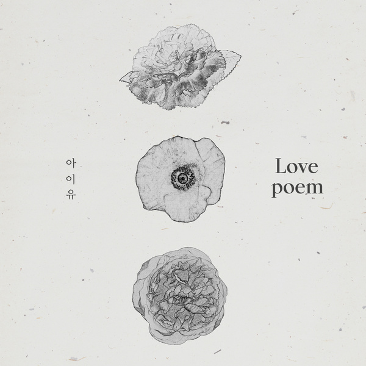

누구를 위해 누군가
기도하고 있나봐
숨죽여 쓴 사랑시가
낮게 들리는 듯해
너에게로 선명히 날아가
늦지 않게 자리에 닿기를
I'll be there 홀로 걷는 너의 뒤에
Singing till the end 그치지 않을 이 노래
아주 잠시만 귀 기울여 봐
유난히 긴 밤을 걷는 널 위해 부를게
또 한 번 너의 세상에
별이 지고 있나봐
숨죽여 삼킨 눈물이
여기 흐르는 듯해
할 말을 잃어 고요한 마음에
기억처럼 들려오는 목소리
I'll be there 홀로 걷는 너의 뒤에
Singing till the end 그치지 않을 이 노래
아주 커다란 숨을 쉬어봐
소리 내 우는 법을 잊은 널 위해 부를게
(다시 걸어갈 수 있도록))
부를게
(다시 사랑할 수 있도록))
Here I am 지켜봐 나를, 난 절대
Singing till the end 멈추지 않아 이 노래
너의 긴 밤이 끝나는 그 날
고개를 들어 바라본 그 곳에 있을게